Street Food
Discover Mexico's most famous street eats and where to find them in top food cities.
Street Food Guide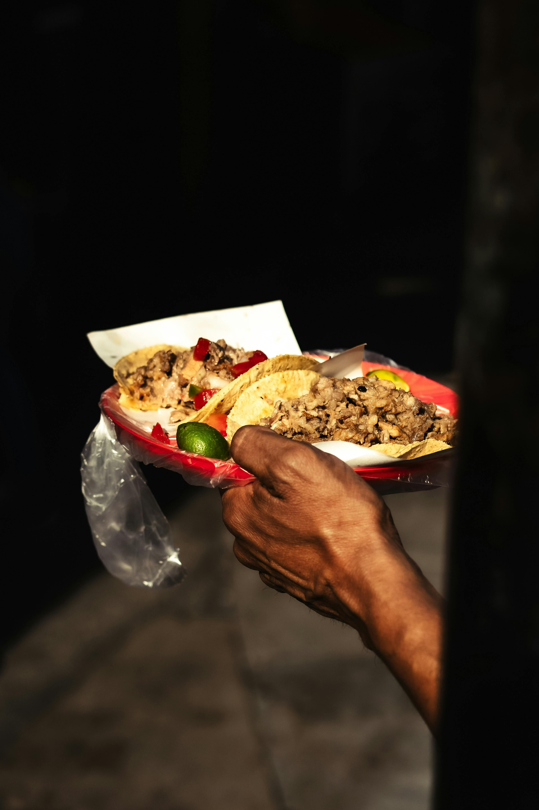
Mexico City Street Food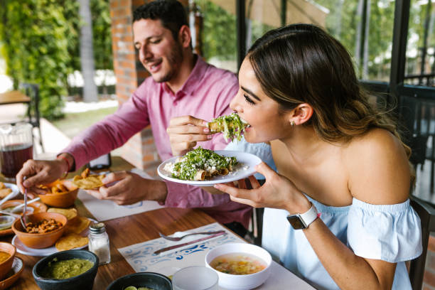
Where to Eat in Mexico City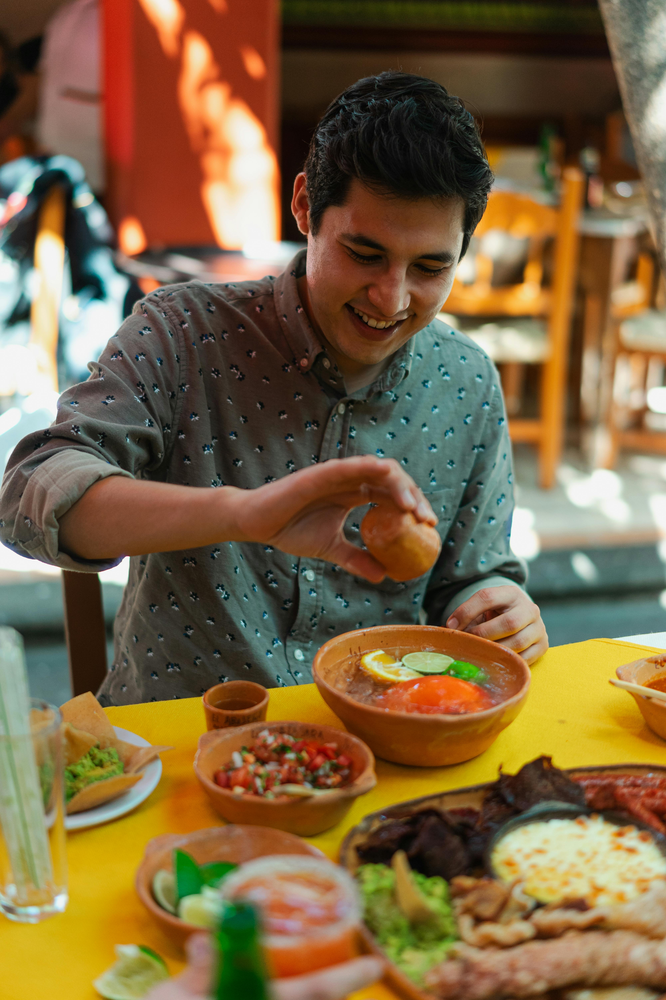
Street Food Mexico City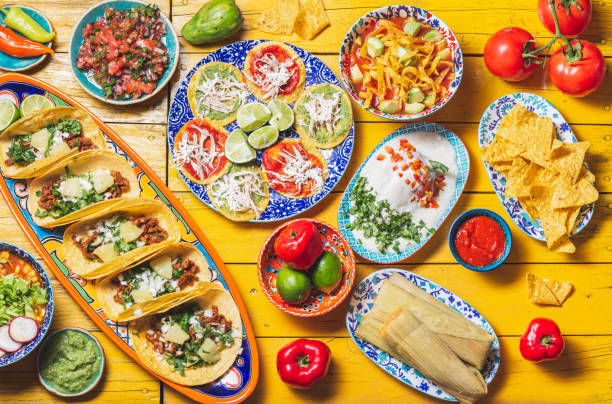
Traditional Dishes
Learn about iconic Mexican meals and the regional stories behind each dish.
Traditional Dishes Guide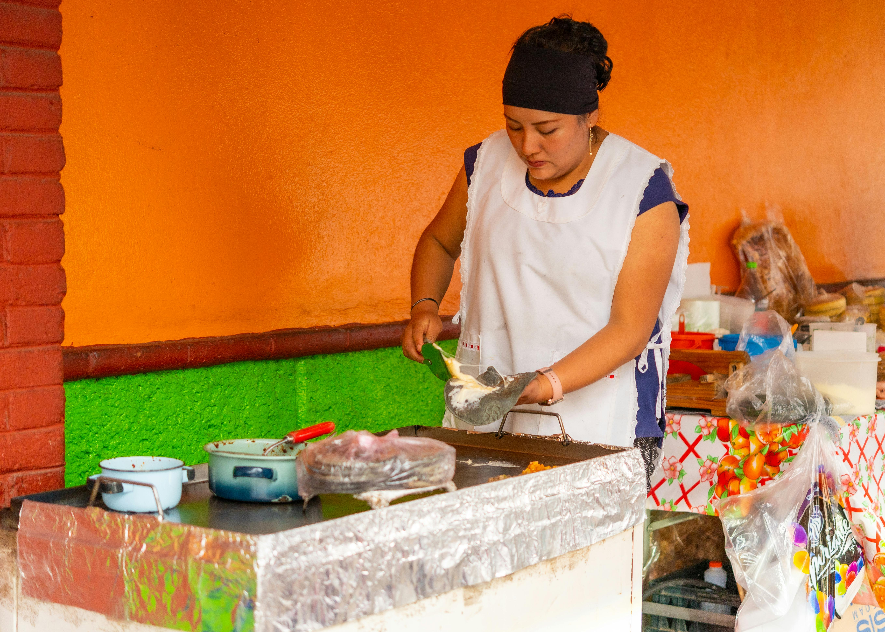
What to Eat by State Valentin Maya Traditional Food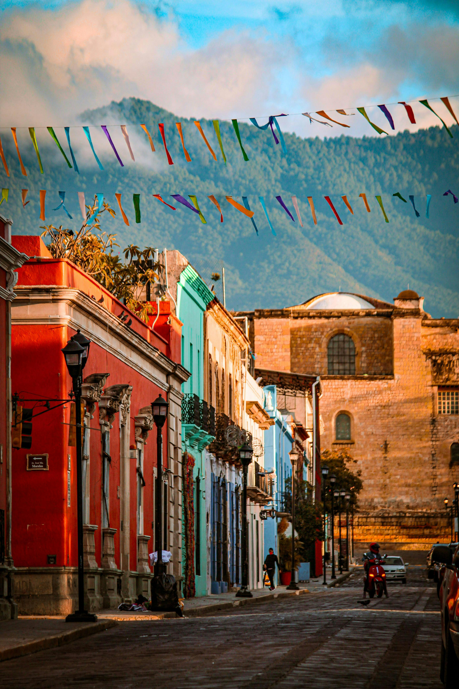
Must-Try Dishes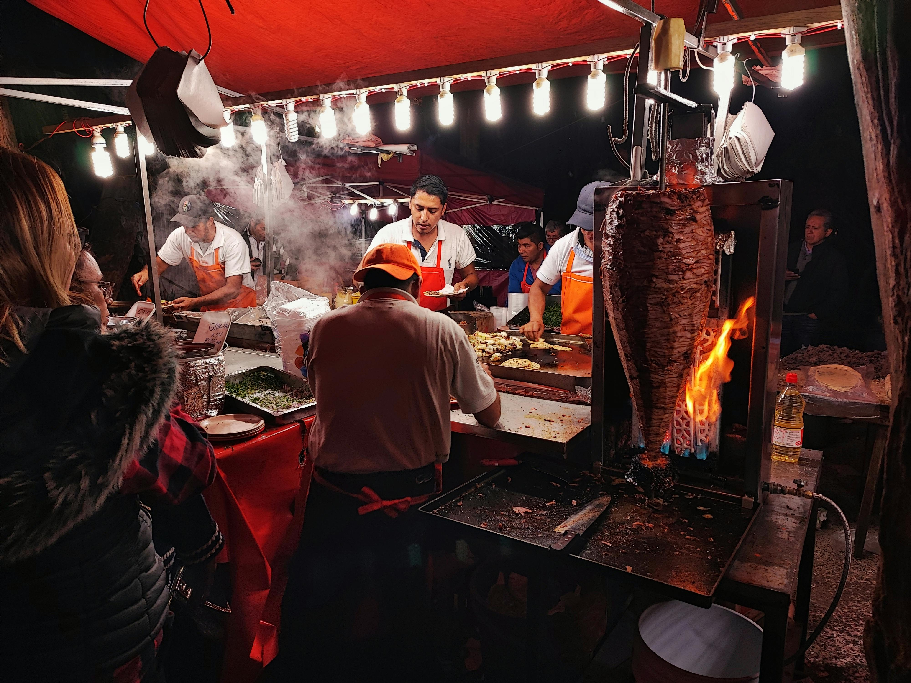
Authentic Food Guide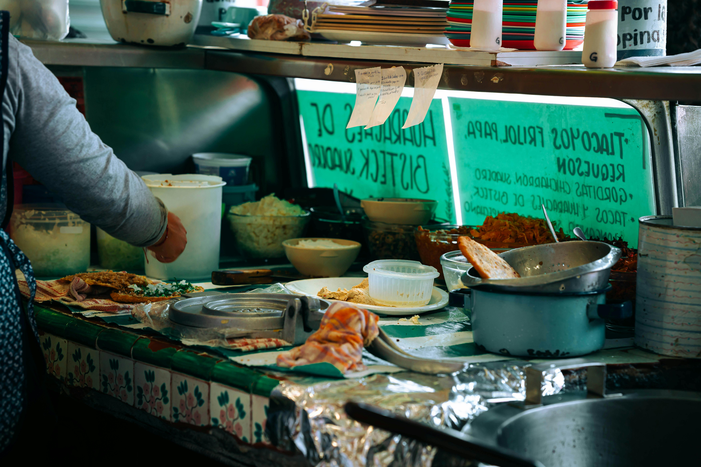
Aeromexico DishesDining Etiquette
Get tips on dining customs, table manners, and restaurant etiquette across Mexico.
Mexican Table Etiquette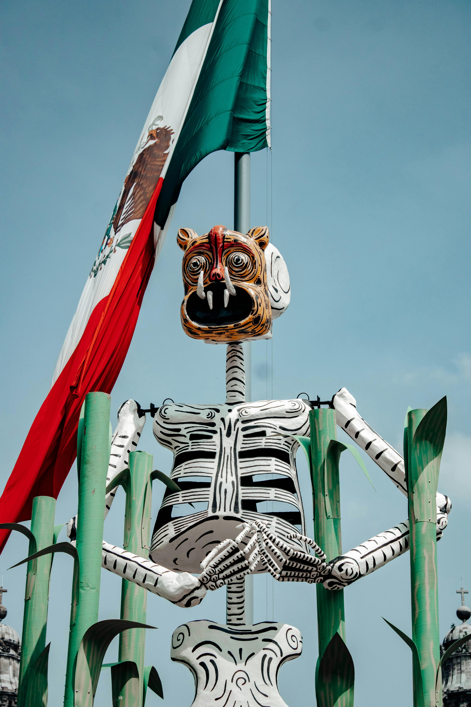
Dining Traditions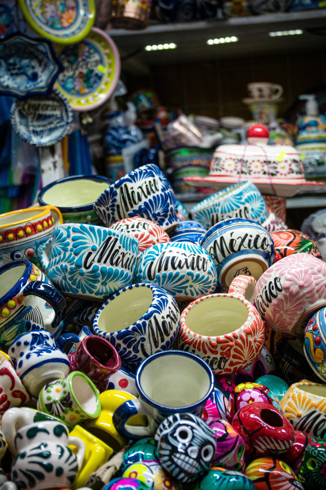
Latino Dining Etiquette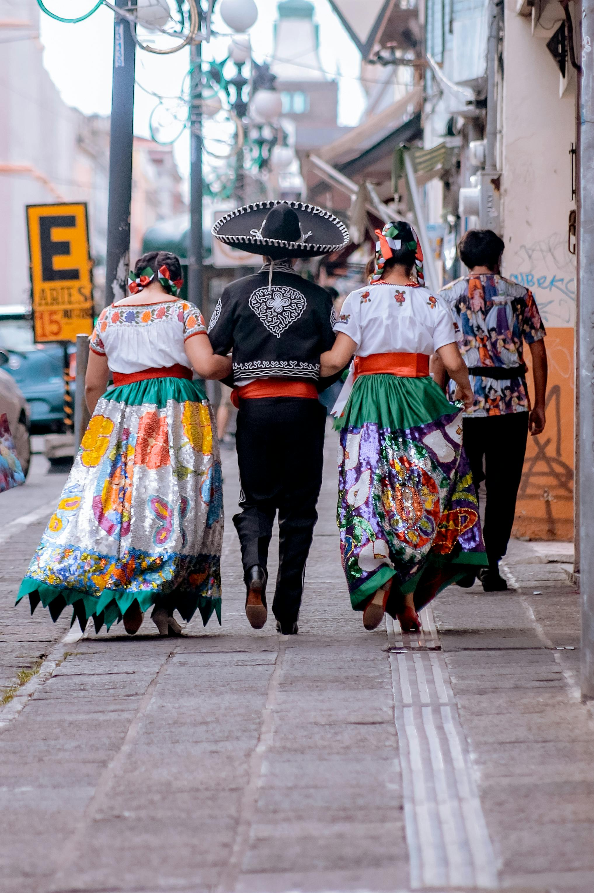
Social Etiquette in Mexico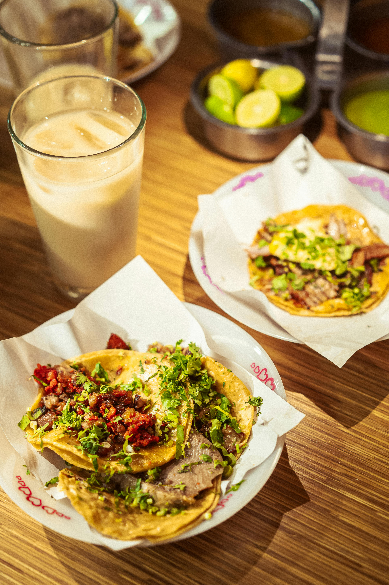
Dining Etiquette Rules Polite Etiquette Rule